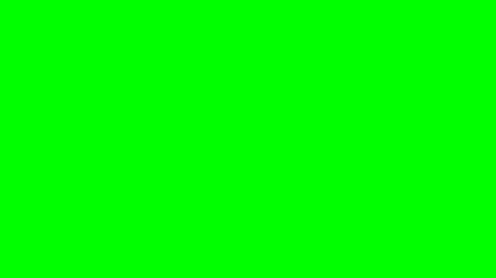

Tela Verde On-line
Uma tela verde é um fundo verde brilhante usado em vídeos e fotos para criar efeitos especiais. Com a ajuda de
um software, a cor verde é substituída por qualquer imagem ou vídeo, fazendo com que pareça que você está em
outro lugar, como em uma praia ou no espaço. Essa técnica, chamada de “chroma keying”, é popular em filmes, na
TV e até mesmo em vídeos do YouTube.

Para sair do modo de tela cheia, pressione Esc.
Como posso usar a tela verde?
Usar uma tela verde é fácil se você seguir algumas etapas simples. Veja como você pode fazer isso:
Configure a tela verde: Coloque a tela verde atrás de você ou do objeto que deseja
filmar. Certifique-se de que a
tela seja lisa e tenha iluminação uniforme para evitar sombras.
Grave seu vídeo: Filme o vídeo com a tela verde ao fundo.
Certifique-se de que a pessoa ou o objeto não esteja usando verde, ou eles também poderão desaparecer durante a
edição.
Edite o vídeo: Use um software especial como o Adobe
Premiere, Final Cut Pro ou até mesmo aplicativos gratuitos como o iMovie para remover o fundo verde. Substitua-o
por qualquer fundo ou cena de sua preferência.
Com alguns cliques, você pode criar vídeos com aparência profissional ou fotos divertidas
usando uma tela verde!
Como usar?
Aqui está o guia passo a passo para usar nossa tela verde
- Abra a tela verde: Clique na imagem da tela verde ou no ícone de tela cheia. Isso fará com que seu
navegador mostre um fundo totalmente verde.
- Sair da tela cheia: Se quiser voltar, basta clicar na tela novamente.
Faça o download da tela verde:
- Escolha uma resolução no menu suspenso ou digite as dimensões personalizadas para obter o tamanho
necessário.
- Clique no botão “Download” para salvar o fundo de tela verde no seu dispositivo.
Por que as pessoas usam telas verdes?
As pessoas adoram usar telas verdes porque elas são muito versáteis.
Aqui estão alguns motivos comuns:
Vídeos criativos: As telas verdes ajudam a criar vídeos legais e
criativos, adicionando diferentes fundos e efeitos.
Economia de tempo e dinheiro: Em vez de viajar para
diferentes locais, você pode filmar tudo em um só lugar e mudar
o fundo depois.
Aparência profissional: Elas dão aos vídeos uma aparência mais refinada e
profissional, seja para filmes, programas
de TV ou conteúdo on-line.
Educação e trabalho: Professores e profissionais usam telas verdes para
apresentações, aulas on-line ou reuniões
virtuais para tornar suas sessões mais envolventes.
As telas verdes abrem infinitas possibilidades. Quer esteja fazendo um vídeo divertido
para a mídia social ou
trabalhando em um grande projeto, essa ferramenta simples pode ajudá-lo a obter resultados incríveis!
Tela verde para limpeza:
tela verde para limpeza do monitor,
tela verde para encontrar pixels mortos,
tela verde para encontrar pontos sujos.
Tela verde online:
Tela verde para videochamadas,
iluminação de tela verde,
Tela de cor verde,
Tela verde para selfie,
Tela led verdes online.
Outros:
Tela verde para projetor,
Tela verde para crianças,
fundo verde em Tela cheia.
© 2025 Tela Verde On-line. Todos os direitos reservados.